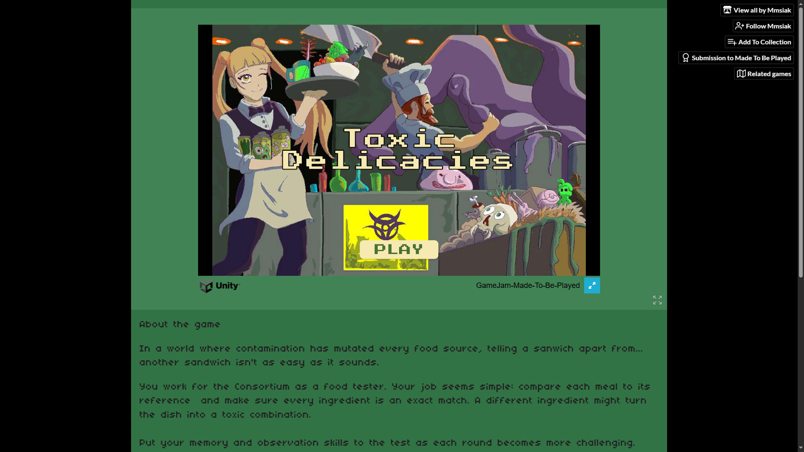
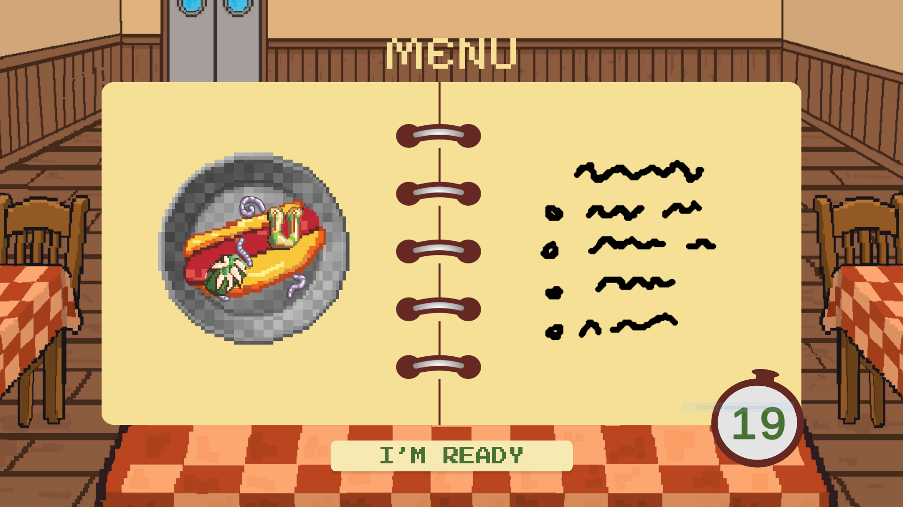
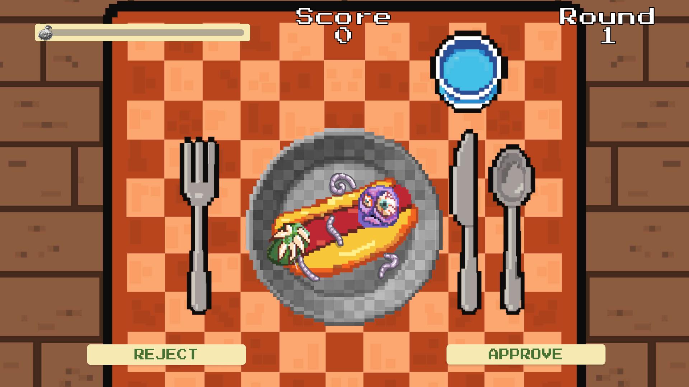
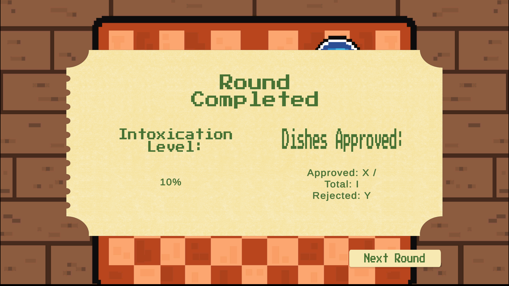

Toxic Delicacies
Un juego de inspección y memoria en primera persona: eres el degustador de un restaurante y debes descubrir qué combinaciones —no ingredientes— convierten un plato en veneno.
Descripción
Toxic Delicacies se desarrolló para MadeToBePlayed, la game jam organizada por MintMood entre el 25 de junio y el 5 de julio de 2026. El tema revelado fue "tóxico". Lo desarrollamos en equipo: Jorge Horta y Mónica Juarez en programación, Jabnel Bobadilla y Esteban Romero en arte, Valentina Castrillon en arte y UI/UX, y yo en arte de assets y diseño de juego.
La narrativa cambió bastante durante el desarrollo: empezamos con un mundo post-apocalíptico y terminamos en algo más ligero y concreto — el jugador es el degustador de un restaurante, encargado de probar cada plato antes de que llegue a los comensales. El problema de diseño central se mantuvo intacto durante todo ese cambio: evitar la solución obvia de "ingredientes buenos vs. ingredientes malos". La toxicidad surge de la combinación, no del ingrediente en sí — cada plato es un pequeño rompecabezas de memoria y deducción.
El público objetivo son jugadores de juegos de inspección y narrativa ligera, interesados en mecánicas de puzzle contemplativas más que en reflejos o acción.
Proceso de desarrollo
- Interpretar el tema del jamMintMood reveló "tóxico" como tema de MadeToBePlayed. Decidimos evitar la lectura literal (veneno como objeto) y explorar la toxicidad como propiedad emergente de una combinación — una decisión que definió todo el sistema de juego.
- Iterar la narrativaLa primera versión situaba la historia en un mundo post-apocalíptico opresivo. A mitad del jam la reenfocamos hacia algo más concreto y jugable: un restaurante, con el jugador en el rol de su degustador. El sistema de combinaciones no cambió — solo el mundo que lo envolvía.
- Sistema de combinacionesDefinimos las fichas de ingredientes y sus reglas de interacción, de forma que ninguna ficha sea "mala" por sí sola — la toxicidad depende exclusivamente de con qué se combina.
- Coordinar al equipo y el GDDCon seis personas en distintos roles, mantuvimos un GDD vivo para sincronizar mecánicas, narrativa y arte a medida que el alcance se ajustaba dentro de los diez días del jam.
- Producción de assetsComo parte del equipo de arte, trabajé specs de sprites y assets para mantener consistencia visual entre platos, ingredientes y el entorno del restaurante.
Equipo
- Jorge Horta — Programación y diseño de juego
- Mónica Juarez — Programación
- Jabnel Bobadilla — Arte de escenarios
- Esteban Romero — Arte de assets
- Valentina Castrillon — Diseño UI
- Laura Rojas (yo) — Arte de assets y diseño de juego
Retos y aprendizajes
El mayor reto fue balancear la complejidad del sistema de combinaciones para que se sintiera como un misterio resoluble y no como memorización arbitraria. A eso se sumó coordinar a seis personas en roles distintos dentro de los diez días del jam, incluyendo el giro narrativo a mitad de camino — mantener el GDD como documento vivo fue clave para que todo el equipo avanzara alineado pese al cambio.
Herramientas
Habilidades demostradas
Galería



